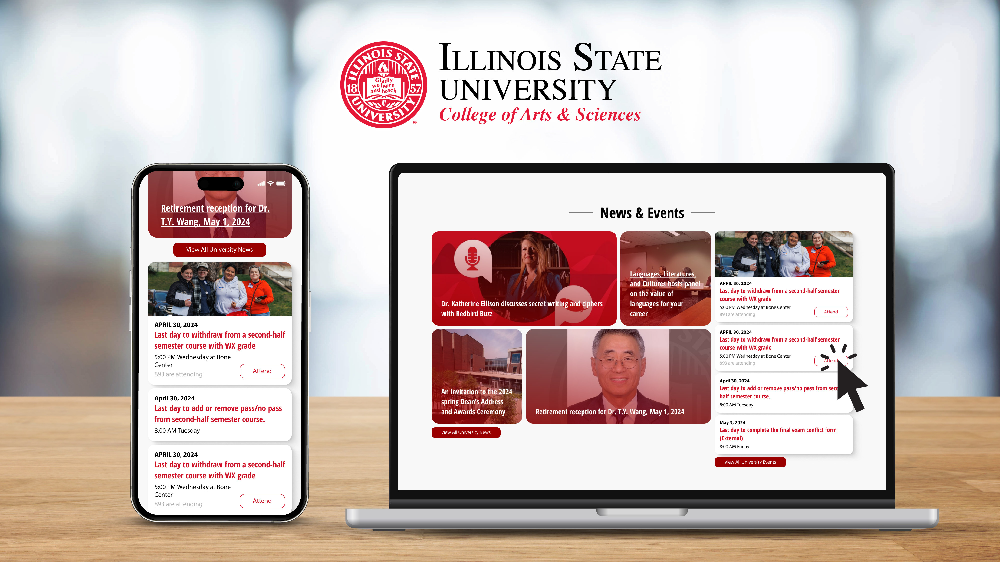
Researcher
UI Designer
Team: Lizzy Miller, Grace Dedmond, & Me
~ 8 weeks
Adobe XD, Figma, Visual Studio Code, InDesign
Redesigned and reworked the News and Events feed for the school's department websites to improve usability and ensure a seamless experience for students. Delivering the best experience for students is our priority, ensuring the platform they use is reliable and effective for their needs. Focused on human-centered design, we created a responsive and visually appealing interface with enhanced call-to-action features and real-time updates.
Aims to enhance student engagement and interactivity by introducing a modernized visual appeal and attraction. By creating an easier platform for interaction, we aim to make students more involved around the campus. It also streamlines the process of finding news and events, thereby improving students' task efficiency.
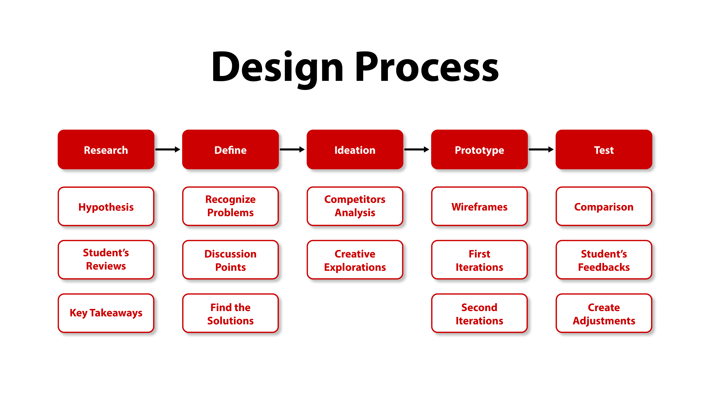
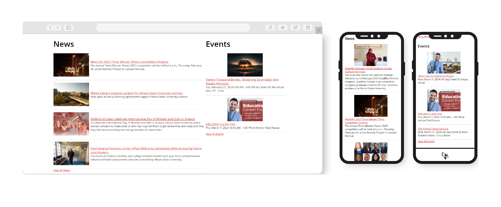
Jumping into this new project, we need to review the current News and Events feed design and examine the flawed features that can be improved throughout the project. This can help identify the pain points the user might have.
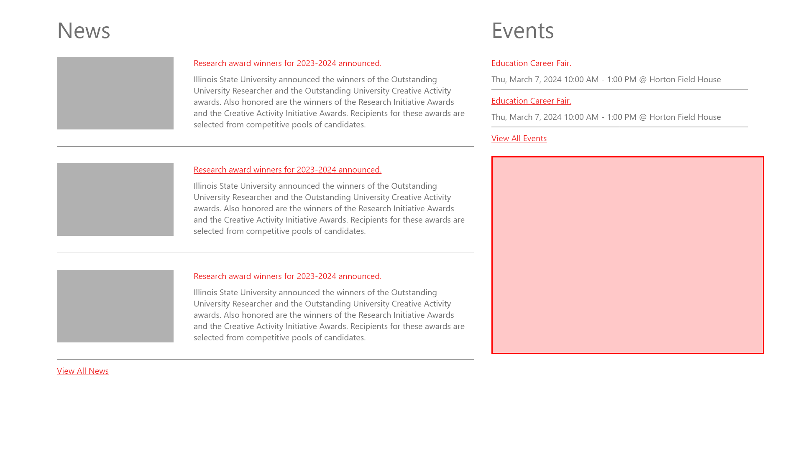
Removing the content from the current design and turning it into a wireframe. By focusing on the layout, you can more clearly see its flaws. The red area in the image shows how inefficient this layout is, and the overall feed is not appealing.
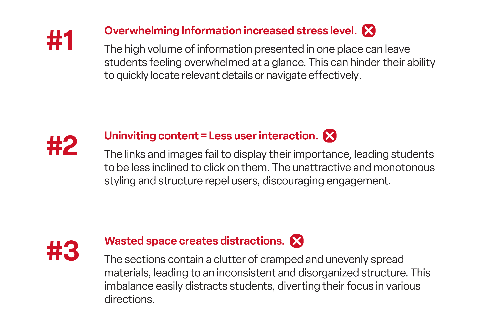
Getting information directly from our audience (students) is the best way to hypothesize and conclude on what their struggles are while using these features. Understanding what they want to get out of this feature and what they actually get when they interact with it.
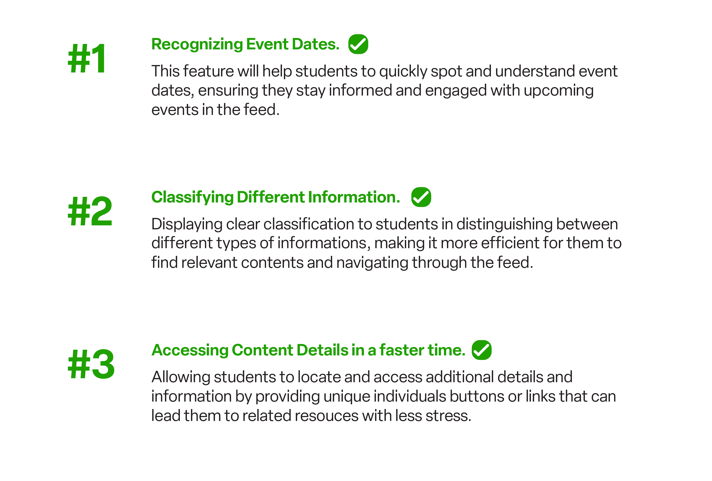
After learning from the flaws that the current design has, it is important to address every issue and pain point that the user may struggle with and create a solution for each of them.
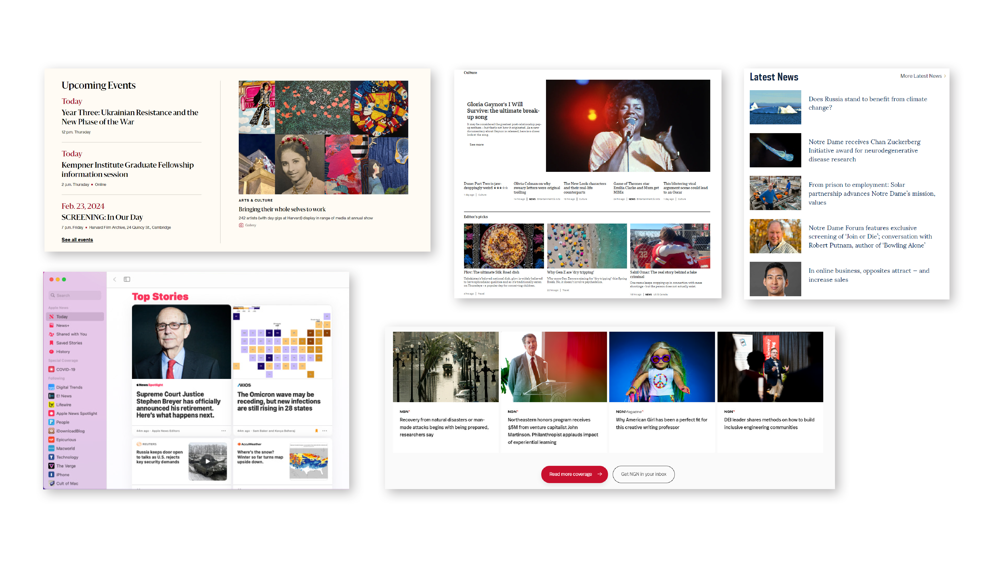
Before fully committing to a design to solve the issues, getting ideas and inspiration is a crucial process to understand what is working for others and what is not. It is also inefficient to create something new that is not very familiar to the users.
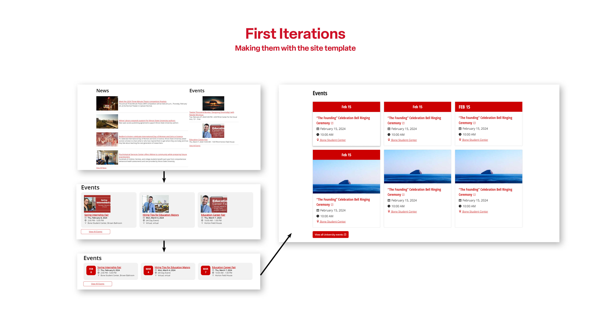
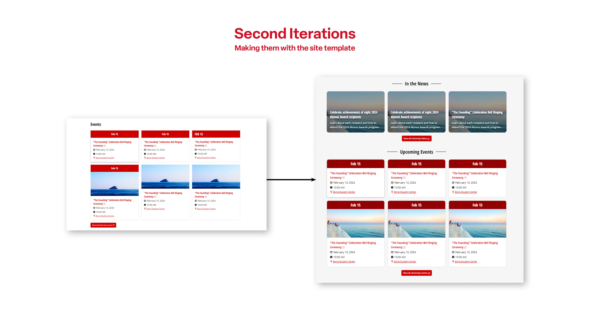
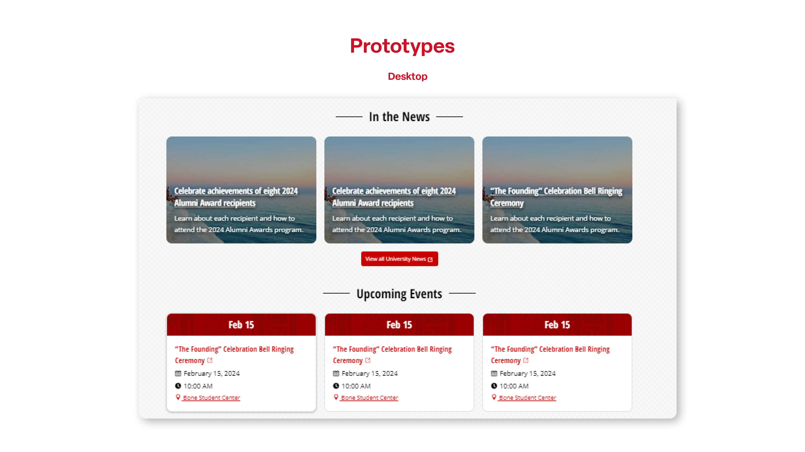
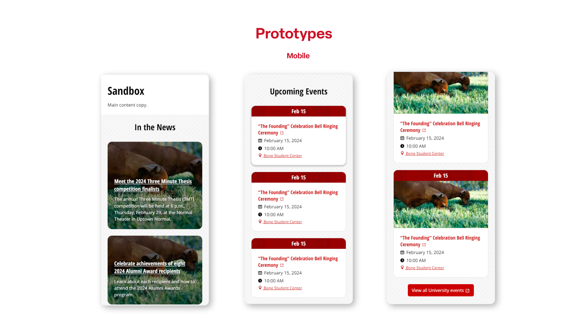
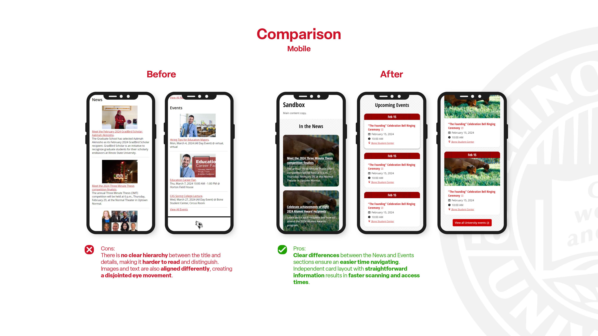
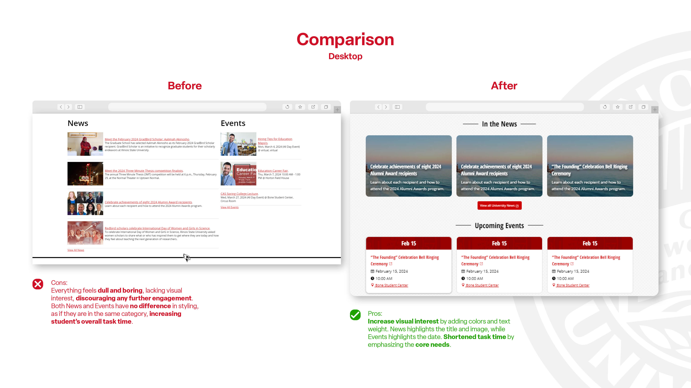
Revisited the objective of the project and added an extra feature to improve user accessibility and task efficiency. By adding an easy-access call-to-action button to send them directly to the reservation page, rather than requiring them to click the event twice to reserve, we can increase student task efficiency by 50%.
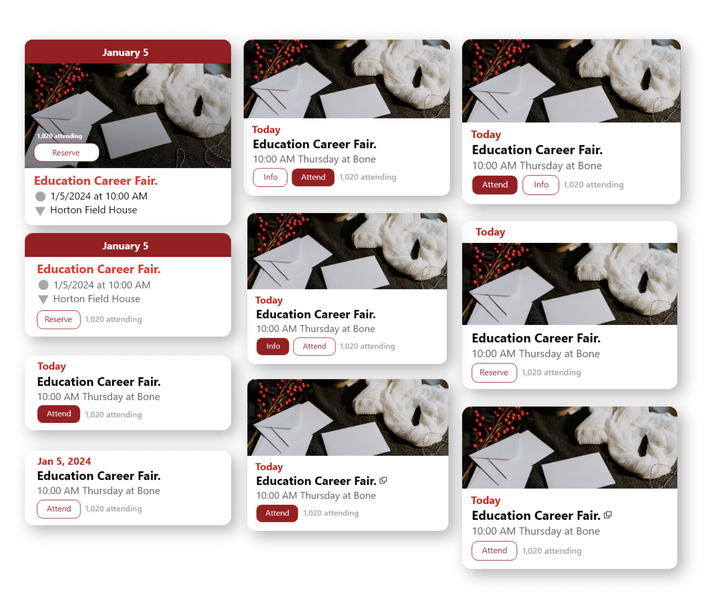
By adding the call-to-action button, the layout of the card must also adapt to accommodate it. At this stage of the process, I am exploring many different options for arranging them in the most efficient way for both desktop and mobile users.
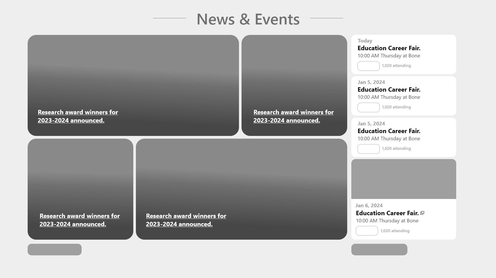
After changing the layout of the card, it is also necessary to change the layout of the entire feed to ensure that both the cards and the feed complement each other. By combining both the News and Events feeds into one container, it is very important to create an easy distinction between the two.
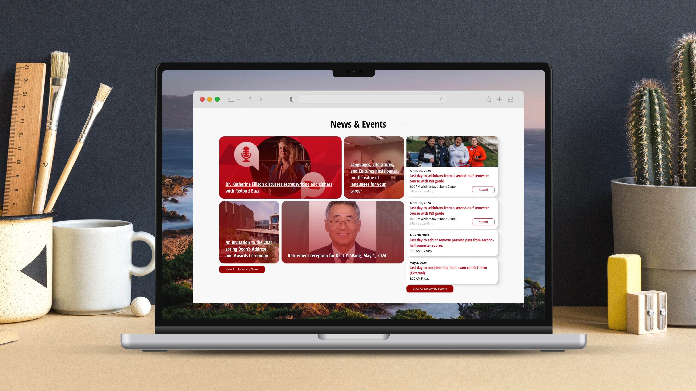
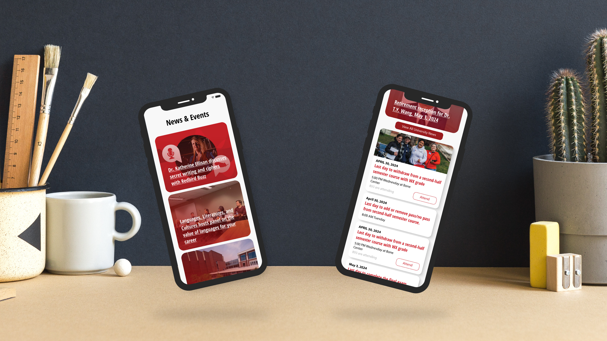
This project highlights the importance of the user at all times. It is necessary to gather consistent feedback and make changes based on their struggles. Always focus on the main purpose of the project: to improve student engagement and efficiency.
I could use a little more feedback from the students. Unfortunately, the timing did not align as we wanted. We weren't able to push out the idea and design before the semester ends. The next step would be to gather student feedback and incorporate success metrics to evaluate how well this new feature performs.
Come check out my resume and portfolio